23 Free Tools
To manage projects, grow communities, and get things done
When I submitted papers to incorporate Wyrd Arts Initiatives, I didn’t know what to expect. Within a few years I was working with over 500 new volunteers to strategize and then implement 35 objectives; founding a national online store and distro; curating and editing “the best music website in Canada” with daily posts; creating a day for the celebration of drone music and coordinating Canadian-wide simultaneous events; organizing board meetings; re-writing bylaws; filing taxes; and managing hundreds of relationships with festivals, communities, publications, and organizations interested in partnering.
With $0 operational budget, and a day job.
When you are intentionally unprofitable, explosive growth means more work. I needed to find ways to optimize everything or lose it all. In the early days, I was receiving hundreds of emails each day, and putting out operational fires constantly. All the energy I wanted to put into exciting projects went to mundane and repetitive administration.
The free tools below standardize incoming information so I can make quick informed decisions, batch actions to minimize work, allow for remote collaboration, eradicate time consuming repetitions, remove distractions, and measure my movement towards goals.
These free tools reduced a 300 hour work-week into a 30 hour work-week.
I wrote this guide for you: for do-it-yourself makers, non-profits, communities, start-ups, or individuals who bite off more than they can chew. I wrote this guide for people who don’t use online tools currently, or who are starting to explore automation and online tools. Consider this list your mechanical jaw.
Here’s the list of free online tools:
- Trello for collaborative content and project management
- Streak for organizing and managing relationships in Gmail
- IFTT for light task automation
- Zapier for heavy task automation
- Toggl for time tracking
- Wave and QuickBooks for accounting and invoicing
- Buffer to schedule social media posts
- You Can Book Me for easy appointment scheduling
- Doodle for booking meetings with other people
- Self Control or Stay Focusd to minimize distractions
- News Feed Eradicator to minimize distractions
- Strides for habit building
- Apple text expander & A Text for text expansion (note: now $4.99)
- Mailchimp for newsletters
- Slack for chatting
- Evernote for filing all documents
- Google Docs for writing, editing, and collaborating on documents
- Google Sheets for collaborating on spreadsheets
- Google Forms for inquiries, applications, and submissions
- Google Drawings for quick flowcharts
- Google Calendar for appointments
- Google Hangouts for national and international video meetings
- Chrome Accounts/People for keeping work separate and sharable
TRELLO
Trello is a free online platform for you to organize projects and collaborate with others. You can keep your Trello boards private, share your Trello boards with colleagues and collaborators, or make your Trello boards public to the world. At first glance, Trello looks like a stack of narrow post-it notes grouped into columns, but don’t be deceived, the simplicity, flexibility, and scalability are precisely what make it valuable.
Here are some of the boards I created (each rectangle is a board).
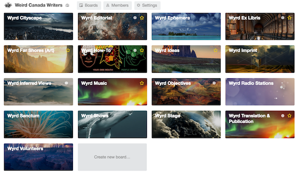When you click on a board, the board looks like the screenshot below. Here’s a board without any content:
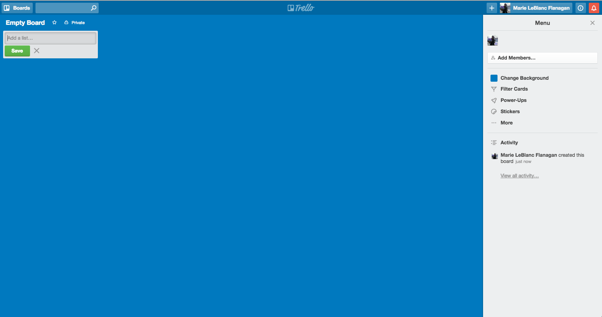Here is a board with content:
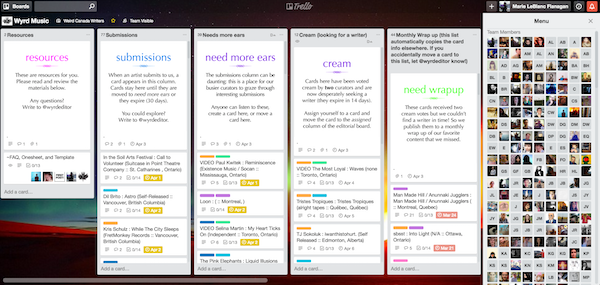And here is a “card” (each little”box” looks like this when you click on it):
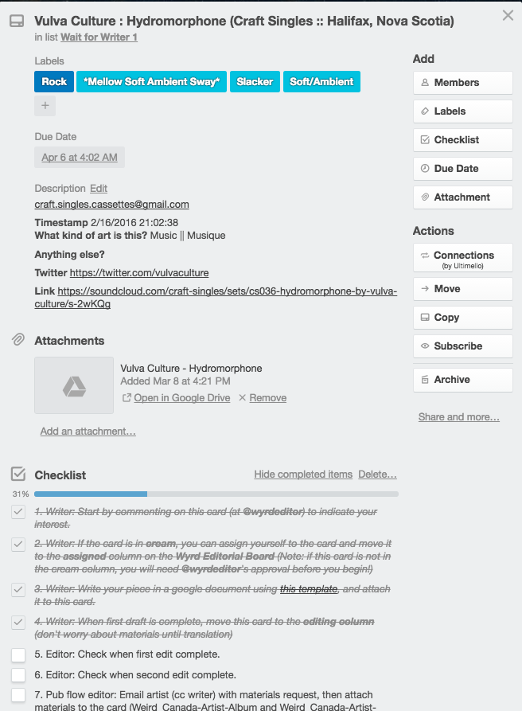Trello has all kinds of features for the cards. Here are a few:
- Documents, picture, attachments, and links can be directly added to individual cards
- Labels can used to describe or filter cards
- Cards can be commented on, allowing for ongoing discussions
- Customizable checklists allow for a standardized workflow
- Due Dates and reminders are helpful for keeping on schedule
- Cards can be assigned to individuals
- Create cards right from your email
I use Trello as a total publication pipeline, a volunteer management tool, a personal to-do board, a catch-all for items of interest, and a lot more. I’ve set up complicated integrations using other systems, but that’s a subject for a different post.
Trello is that is is always improving, there’s even a Trello board where the Trello staff accept public recommendations and votes for improving the service.
CHALLENGES
People are often reluctant to use new tools and platforms, and that includes Trello. It is hard to convince people to go somewhere inconvenient for them, and new work-oriented spaces are always inconvenient. The perceived value of a new tool must outweigh the inconvenience, and barriers must be minimized through user-education, obvious benefit to the user, familiarity-building, positive user experiences, and clear systems.
A single individual in a community may not immediately see the need for a large collaborative organizational tool. Some of our writers in the early days would bypass the systems and try to email content. It can be challenging for one individual to understand the impact of thousands of emails on volunteer editors, and the difficulty in designing functional succession plans when the entire system is locked in a rotating queue of burnt-out individuals’ inboxes and minds.
Ultimately Trello was a total success for us in engaging volunteer writers in content and pushing content through editorial, translation, and publication, but we struggled to engage volunteers in other work using Trello. These are often the exact same volunteers. Volunteers tell us they want to use it, but for non-writing tasks they respond better to calls through email or social media. I haven’t figured out a solution yet, but we still use Trello to keep all those email and facebook conversations organized.
For the publishing flow, it’s cut my work down to a fraction of what it used to be, despite the ever growing numbers of submissions and volunteers. Everything is accessible to everyone, so writers can see where their content is in the queue, and people can help each other. Teams of publishing flow editors, copy editors, web editors, translators and French proofreaders jump in and support each other on a daily basis.
RECOMMENDATIONS
Invest time in making sure people feel comfortable and engaged. We made a silly tutorial video and put time into tutorial meetings, and it helped a lot. Be sure to show people why it is valuable for thempersonally. In our case, Trello allows writers to have access to all the content exactly at the moment that we do, allowing them greater freedom, as well as transparency into our curatorial and editorial systems. For the editors, using Trello means that they can take vacations, breaks, and easily get support when needed.
In setting up Trello I strongly recommend keeping it really simple at the beginning. For example, create a single card for “finances” with a simple checklist and a few relevant attachments, rather than creating 20 financials cards with tons of details, checklists, due dates, and labels. It’s easier for the team to learn the systems if you start simple and build features as you need them.
Complexity, due dates, and complicated systems should always be built after people recognize that there is a problem, and after they express their need for a solution. That goes for any solution-system: never solve the problem before people know there is a problem.
STREAK
Streak is a Gmail plugin, and is invaluable for managing projects and building relationships without leaving your Gmail.
Streak is a CRM (customer relationship management tool) traditionally used by sales people to organize relationships and complete sales.
Streak is also useful for people who don’t sell anything: almost everything you do in your email is a process of relationship building towards some goal. Replace the word “sales” with “volunteer relationship building” or “event management” or “partnerships” and the software becomes useful. I use Streak for hiring, press releases, volunteer management, project management, outreach to every record store in Canada, inclusivity council voting, grant applications, organizing national events, partnership requests, conflict tracking and resolution, to-do lists, and more.
Anytime I’m interacting with more than three people, and trying to move with them through more than two steps, I’m using streak. No more dropped balls, as long as I maintain my systems. Way less work, because I deal with things in batches instead of managing each step with each person individually.
For example, when I am organizing our Drone Music Daycelebrations, every time someone reaches out with a new show, I create a new “box” (essentially a spreadsheet row in my gmail) with their name, city, link to their event, and contact, and I put them in the “interested” category. I can then send out emails to all the “interested” people all at once, and move them to the “gave information” category. Then, after the event, I can contact them all for feedback, and move them to the “feedback” category.
Here are some of the streak templates you can use:
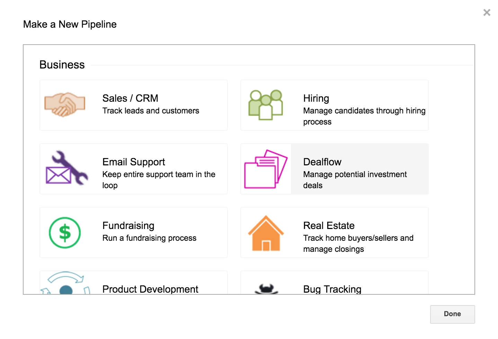Here is a totally blank streak pipeline:

Here is last years Drone Day pipeline:

Here is my grant application pipeline:
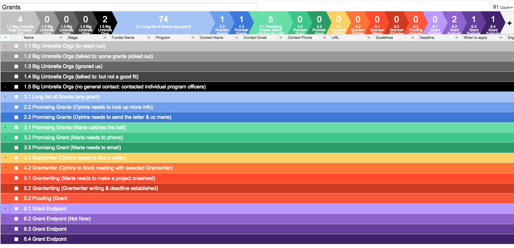Below is a specific “box” within the pipeline, which was created to manage a specific grant application. You can see the attached emails at the bottom of the screenshot: when I share this streak pipeline with a volunteer, they can read those emails. This visibility is invaluable for succession plans and continuity in our volunteer-staffed organization.
Here is a streak “box”:
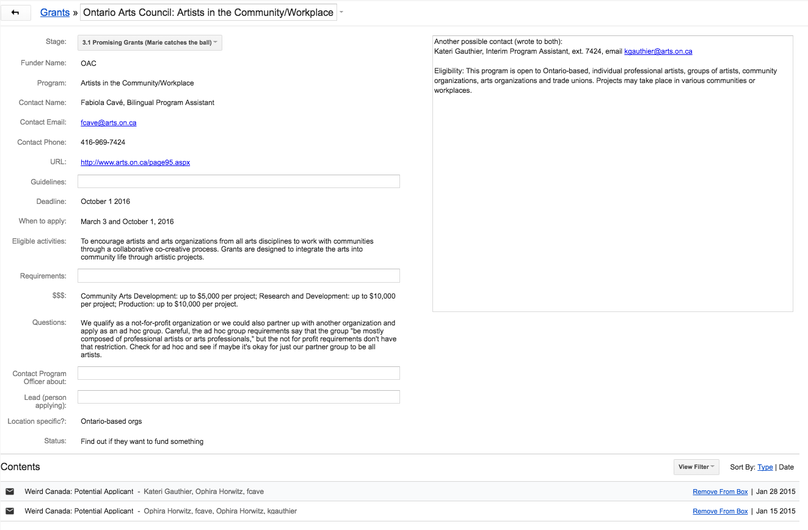Below is a screenshot of an email which has been assigned to a “box” in Gmail. All the information on the right side can be edited from within your email. It’s incredible how much easier it is to stay organized when you don’t need to leave your inbox to do it.
Here is an email attached to a streak “box”:
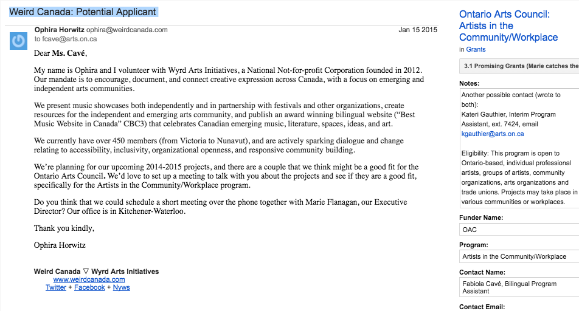Streak has a built in text expander. When you type specific text (example: “1address”) it is replaced by other specific text (“Weird Canada 2 Fake St South Waterloo Ontario 67H 3C3”). Text expansion is helpful if you type similar emails over and over again. For example, I get many partnership requests weekly, but most of them don’t have the information necessary to make a decision. So when people reach out, I type 1partner and the text in the screenshot below is magically inserted into the email.
Here is the snippet manager, open to the snippet I send to potential partners:

Streak has a number of other features, many of them exceptional:
- Anyone who has access to the pipeline has access to the templates, so you can share up-to-date email templates with team members as needed. This is great when you have volunteers coming and going.
- Streak allows you to send a mail merge: individually addressed and unique emails to a group of people all at once.
- Streak allows for easy .csv export (and import) meaning that you can easily move to a spreadsheet if you change your mind later.
- Streak allows you to send emails “later”. This means you can write emails at 1 am and schedule them to go out the next morning. It also means that you can easily schedule a follow up note.
- Streak allows you to “snooze” an email. This means the email disappears from your inbox and reappears at a scheduled time. Tomorrow at 9am? In a week? In six months? This means that you don’t have to stare at old emails in your inbox, or remember to follow up on projects.
- “Thread splitting”: Sometimes Gmail email threads are lumped together even when they shouldn’t be. If you have never had this problem you won’t understand why this is exciting. Streak lets you break the thread up.
CHALLENGES
A few months ago Streak abruptly bumped most of their services to paid. They didn’t do it gracefully, and ignored feedback from their users about the process. Most of the changes were in regards to sharing pipelines. This is part of the challenge with “free” software, well any software, but free especially. Things can change at any time and you are not in control.
Streak is still sometimes glitchy and clumsy, though way better than when I first started using it. I see new improvements roughly every six months, so I know they are trying to make it less painful. Still: all 100+ people I’ve introduced to Streak hate it, even the ones that simultaneously love it. It is definitely a tool for the volunteer coordinator, not the volunteers. You really need to understand the administrative issues it solves, and know/hate those issues intimately to understand the value.
RECOMMENDATIONS
If this is your first time using a text expander, email templates, or mail merge I strongly recommend that you keep in mind why you are emailing people in the first place: to build relationships. Templates and mail merges are great for cutting down on your mental work so that you have the energy, time, and capacity to build those relationship. Carbon copy emails are not great for building relationships.
When using Streak (or any major organizational tool) it’s critical to consider why you are using it in the early planning stages. What are your goals? What major steps or stages do you want to document in the pipeline? How will this tool enable you to reach your goals?
Your goals and needs will change over time, and Streak is easy to adjust and adapt by adding, removing, and renaming stages. Always have clear “steps” or “stages” for any pipeline, and consider carefully what they mean, what purpose they serve, and why they are unique. For example:
- Volunteer Filled in Form (automatic stage)
- Volunteer Booked Onboarding Meeting
- Volunteer Onboarded
- One Week Followup
- Volunteer Unresponsive
- Volunteer Completed First Task
- Volunteer First Task Feedback Complete
- Volunteer Actively Working
- Volunteer Sleeping or on Break
- Volunteer Offboarded
Finally, when using tools that operate by fitting people into categories, you must remember that the categories are a reduction and a construct. For example: the barriers that one potential volunteer faces to book a meeting with you (childcare, access to internet) will not be the same as those faced by another (confidence, safety). Your system of boxes and stages should serve to help assist you in interpreting, organizing and achieving, and should never overwrite your foundational purpose and goals.
IFTT
IFTT (If this then that) is a tool that connects separate things together, and lets you automate stuff that normally you would just do manually. The name is describing what it does: if this happens, do that. IFTT can be handy when you are doing the same boring task repeatedly.
For example:
- When someone tags a photo of Weird Canada on facebook, download it to dropbox.
- Every time a new volunteer fills in the volunteer form, add them to my address book.
- When I get an email with URGENT in the message, call me on my cell.
- Share new links on facebook to twitter
Check it out:

IFTT is 100% free, well designed, intuitive and beautiful.
CHALLENGES
IFTT has limitations in scope and connections. I’ve daisy chained multiple recipes together at times to get the solution I need. Also, the “channels” (the programs it hooks up with) are limited.
RECOMMENDATIONS
Try IFTT out. Even if it isn’t useful to you right now, it will give you an understanding of how automation works. Play with IFTT before using Zapier (below) as it has a great interface with many “recipes” and is friendly to beginners.
ZAPIER
Zapier is the exact same concept as IFTTT, except there are more services you can interact with, and more options to get things done. There is a free version (which I use) but unlike IFTTT, you are limited in the number of formulas you can run, and the number of times that you can run them.
Here are a couple of the zaps that I use:
- If someone submits music to the site [and it is Canadian] make a new Trello card for it
- If someone fills in the Empathy Council form, add them to my Empathy Council streak pipeline
- If a trello card reaches the “cream” column AND has the words “interested in the distro” email the distro volunteers and create a new box in the distro pipeline for it.
Below are the zaps that we run for new submissions. Zapier checks our google form every 15 minutes and sends any new submissions to the appropriate Trello boards.

Here is a screenshot of (part of) the zap used to send new music submissions to Trello. It is filtering the submissions to make sure they are Canadian, and if they are, it carefully formats the title of the Trello card, the content of the Trello card, and affixes a checklist to every card.
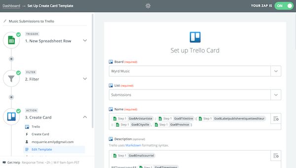CHALLENGES
Zapier can be a little difficult to use, and when it breaks, it really breaks. I’ve had some very long work sessions trying to fix broken zaps. But when Zapier works it is a dream. I can’t imagine going back to copy-paste. If Zapier disappeared I would teach myself to code a solution.
RECOMMENDATIONS
Start with IFTT before Zapier. Zapier is more powerful, better connected, and more useful, but IFTT has a way better interface. If you set up zaps, be sure to test them carefully before running them over a pile of data.
TOGGL
No one wants to track their hours, and I’m no exception. But Toggl helps. It is great for tracking hours, and allows you to generate beautiful reports. Tracking hours can help with making realistic project timelines, getting funding for projects, and prioritizing key goals.
Here is the basic Toggl interface:
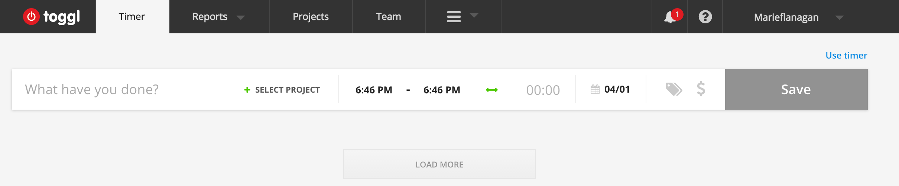Here is a sample weekly Toggl report:

WAVE
Wave is an app that our team uses for invoices and accounting, alongside QuickBooks.
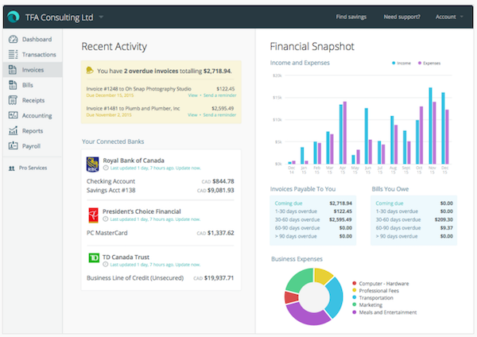BUFFER
Buffer is a tool for scheduling and tracking social media posts. It is lightweight, user-friendly, and helps you to tweet at the optimal time for your followers.

YOU CAN BOOK ME
Youcanbookme is a free online scheduling tool that allows people to book appointments directly into your google calendar. It also synchronizes automatically with google calendar.

I simply schedule when I am available and Youcanbookme allows people to “book” me. For example, I am generally “available” between 10am and 9pm. But if I manually schedule a meeting in my google calendar at 5 on Wednesday, the youcanbookme calendar will immediately sync and show that slot as unavailable. It is very clever.
Youcanbookme is invaluable in scheduling meetings with people without the inevitable back-and-forth. I receive a confirmation email from the service, and the appointment appears in my google calendar.
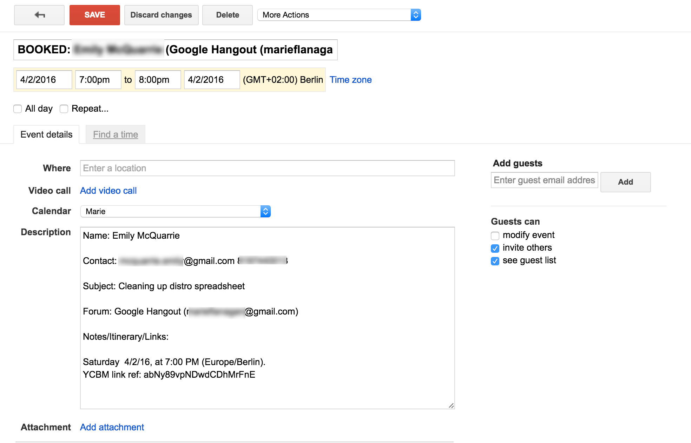DOODLE
Doodle is a free online tool that helps multiple people find a mutually agreeable time to meet. The organizer selects a number of possible dates and times, and everyone else updates the doodle with their availability. Like Youcanbookme, Doodle cuts out a lot of emailing back and forth.
The biggest challenge with Doodle is getting everyone to respond in a timely way. Slower responses can make the entire process irrelevant, so ideally the person organizing the meeting follows up on slow responders individually.
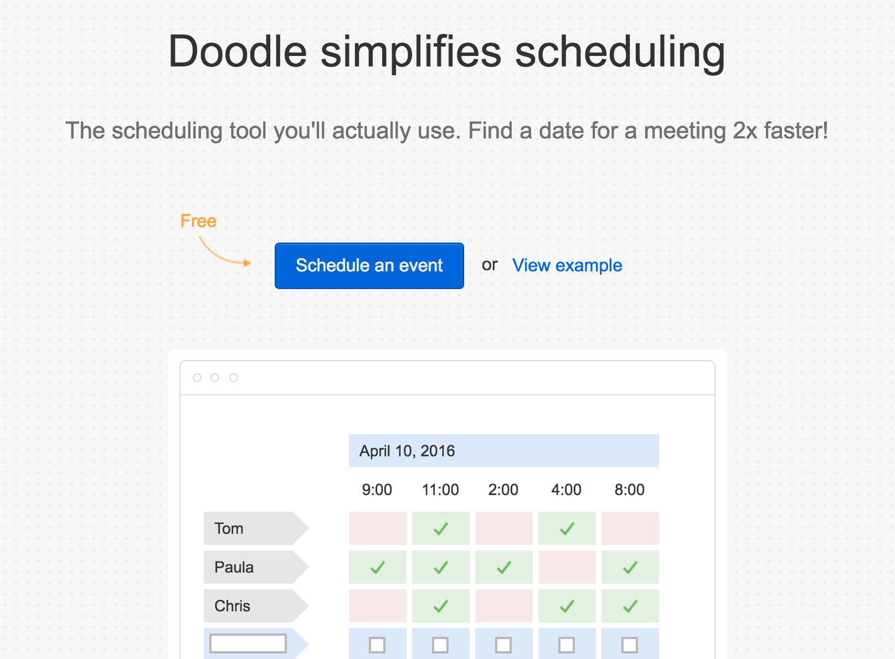SELF CONTROL
Self Control changed my life. It allows you to restrict yourself from visiting specific, self-defined sites for a self-defined amount of time. Self Control is for people who don’t have self control. There’s no shame in it. Be like the child who pretends that the marshmallow isn’t there.
I am currently experimenting with a Chrome plug-in called Stay Focusd that does the same thing. People have been complaining about Self Control breaking lately.
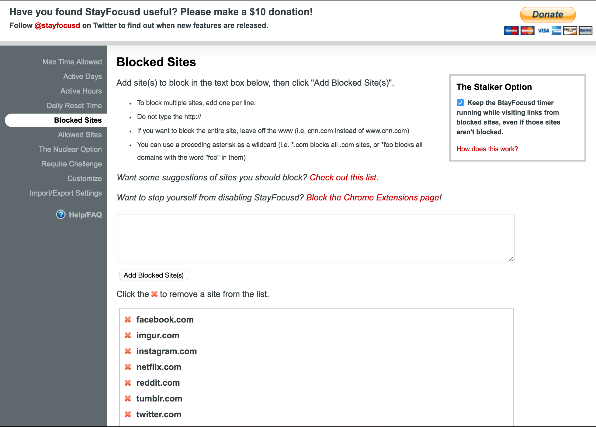NEWS FEED ERADICATOR FOR FACEBOOK
News Feed Eradicator for Facebook is a Chrome extension that gets rid of your facebook news feed. Especially useful if you need to use messenger and events for work, but keep getting sucked into the feed.
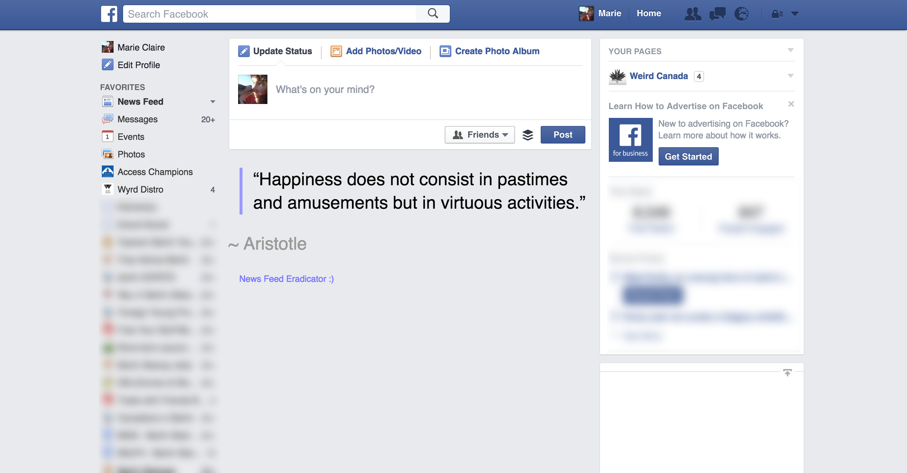STRIDES
Strides is a habit building app. It works simply: you check boxes daily to meet your goals. There are many templates to use (meditate daily, work out 3 times a week, drink 6 glasses of water daily), and settings to tweak, but essentially it is a way to hold yourself accountable to your goals.
Here’s a screenshot of the app home
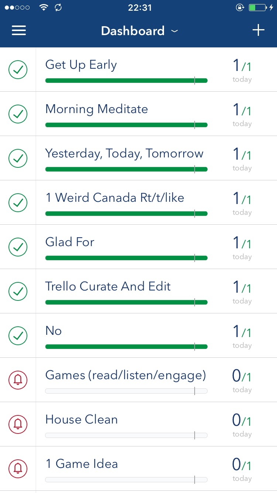Here’s a screenshot of a specific goal
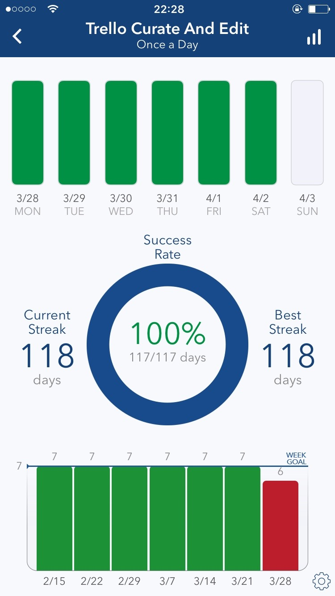Strides works for me, but there are a number of apps like this, even ones that integrate role playing games!
TEXT EXPANDER
After using the text expander in Streak, I was totally addicted. Apple products have some text expansion built in, and that served me well for a while. But I needed to use a text expander in Trello to deal with frequent questions, various email clients, even social media.
So I purchased A Text. It’s the only item on this list that isn’t free long-term (there’s a free trial) but if your needs are small, you can just use the built in one if you are using a mac product.
One caution: text expanders are great for saving time, but I always advise against sending people carbon copy messages. Some small personalization is really important for relationship building.
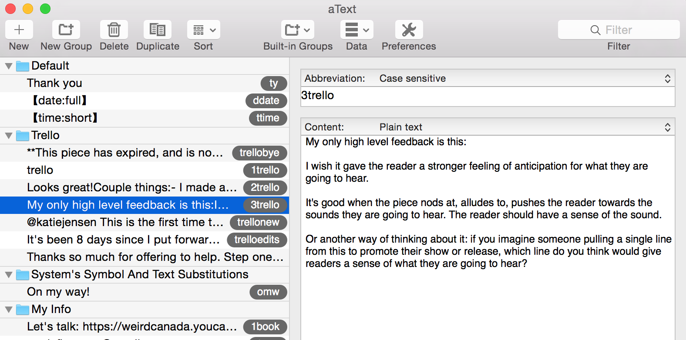MAILCHIMP
Mailchimp is a handy, pretty, easy way to send newsletters, and track the numbers of people who open and engage with your newsletters.

SLACK
Slack is a handy tool for group chat. It’s informal, friendly, and an easy way to have conversations.

EVERNOTE
Evernote is a searchable digital filing cabinet. I scan all documents and pictures to Evernote, and that way I always know where everything is. It’s a bit clunky, but the search feature makes up for all of that.
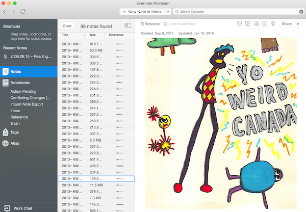GOOGLE DOCS
It’s inefficient and tedious to save, attach, and send word documents back and forth attached to emails. I need a platform where I can collaboratively work on and edit documents with a number of different team members with varying levels of tech capabilities/computers/software.
Enter Google Docs.
Google Documents allow many different people to edit and access the same file, at the same time. Each document has unique privacy settings, so you can share them freely with universal-edit-access for all, comment-only access, or even view-only access. You can also keep documents private to yourself.
Sometimes I want certain editors to be able to freely edit, certain volunteers to be able to comment on the document but not edit, and strangers to see nothing. Easy.
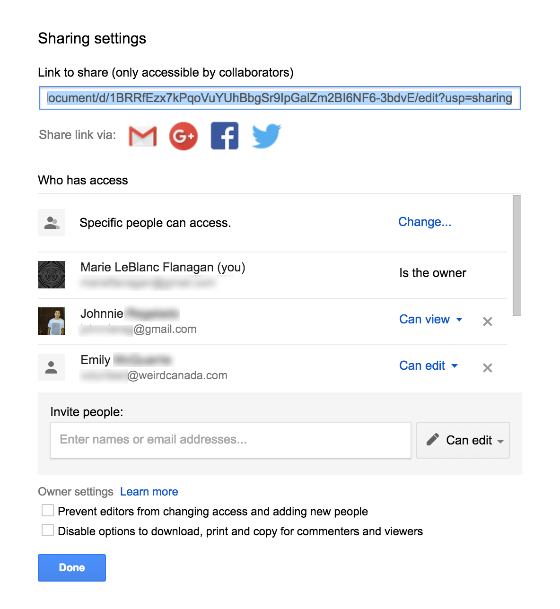Commenting is a very useful feature. It allows for unobtrusive edits and suggestions, and is invaluable in mentoring, proofreading, and making suggestions. Just select/highlight text, right click on it and select comment.

You can also hyperlink right in the text, linking words to any web address. You can hyperlink entire labyrinths of google documents together. There is even a “track changes” style option as well, in the top right corner, where you can suggest edits for the writer.

I use google documents even when I am working directly and in physical proximity with a colleague. Both people can work simultaneously, and it removes that awkward work/power dynamic where there are multiple people and only one pair of hands on a keyboard.
You can easily insert pictures, diagrams, tables. There is even a built in table of contents.
I’ve used google documents for everything: tutorials, press releases, meeting agendas, scratch documents, even every individual piece on www.weirdcanada.com gets its own document based on this template. I even use them for our open databases of grant applications.
Google documents backs itself up constantly, and you can go into the past and retrieve old versions. Yes, it has an internal time machine.
Magic, and totally 100% free. Unless you count google taking over the world and tracking your brain.
CHALLENGES
The “google drive” where all these text documents live feels very unintuitive. There are folders and a great search function, but the drive is clunky. There are limitations to the features in the text editor, which can feel limited if you are used to the hundreds of features in Microsoft Word.
RECOMMENDATIONS
I recommend simply bookmarking your files for easy access until you feel comfortable navigating the Google Drive. This goes for any file management, but I strongly recommend using naming conventions carefully (e.g. “Weird Free Canada Online Tools 2016”) so you can easily find what you are looking for. Finally, I strongly suggest paying attention to who “owns” the files. Files are shared easily, but the person who creates it owns it by default, and can therefore delete it or remove access accidentally if they leave the organization. Ownership can easily be given away, and a consistent and reliable person should “own” all the files.
GOOGLE SHEETS
Google sheets are convenient for all the same reasons as Google Documents. They are simply online spreadsheets. Each google form generates a sheet automatically, so if you are using forms (below) you will also be using sheets.
Here is a sample sheet, our database of festivals

One interesting feature in sheets is the ability to apply and save filters, so you can see only rows that meet specific criteria.
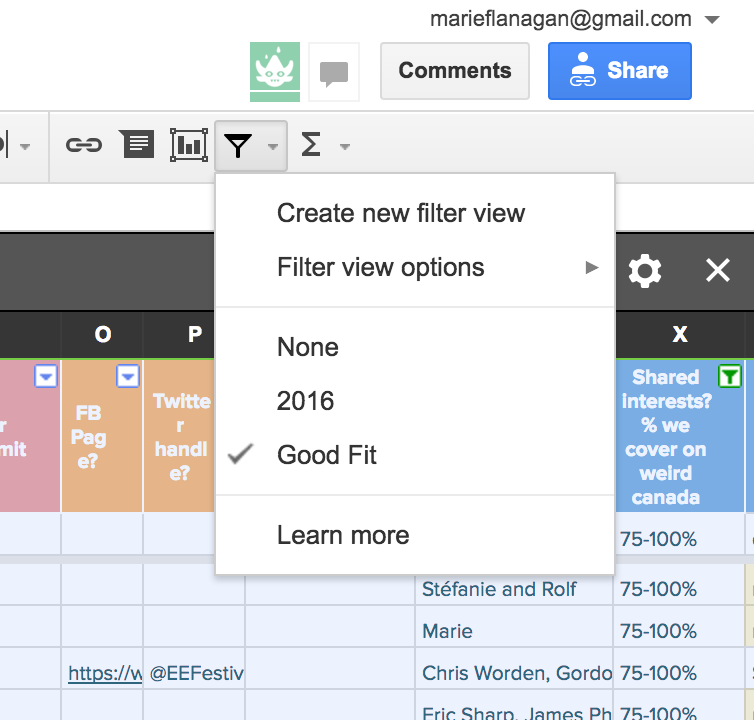Some of the formulas and functions that you can use in Excel also can be used in Google Sheets, and there are many plugins that you can use, including ones that identify and remove duplicates, and ones that standardize data. If you are technically inclined, you can even write scripts.
GOOGLE FORMS
Forms are something that you will never need unless you deal with a lot of information. Specifically, you need them when you deal with the same thing, over and over and over again. Things like people submitting music to your review site. Or volunteers for your event. Or feedback about how terrible your pizza is (lay off the cornstarch!).
I have spent many, many hours trying to make online forms (2007-2010) with tortuous wordpress plugins because I didn’t have the money to hire a developer. I needed a platform that would allow me to make custom forms easily and edit them when necessary. And, of course, I need the form to spit data into a spreadsheet where it can sit in tidy little boxes.
Enter Google Forms. Google Forms allow the user (me) to make any number of customizable forms, which send the data to a spreadsheet. I use them any time I need to collect information from a number of people. Sometimes I use them for a couple weeks and then archive them. Some stick around forever. Sometimes they change drastically over time, with small edits here and there. Some are short, some are long.
Some examples?
I use a google form to process every single new volunteer. If I ever need contact information for anyone, I know where to find it. It also means that new people who are getting involved write out their interests and skills in a clear way, so I can find them meaningful work. We have an onboarding meeting too, but there is nothing like a form to collect specific information. No more back and forth about interests and availability.
I use a google form for general contact and feedback, and it saves me hundreds of email hours a month. In designing the form, I also design the conversation, in a totally rigid and inflexible way. Which makes me sound like a monster. But I really need people to communicate in a way that I can understand, and ideally in a way that allows me to take action. The rigidity of a well designed form forces people to specify what they want, even if that is just “I don’t know what I want”. I’ve used forms for Wyrd Distro signup, Empathy Council votes, summer intern hiring, and much more.
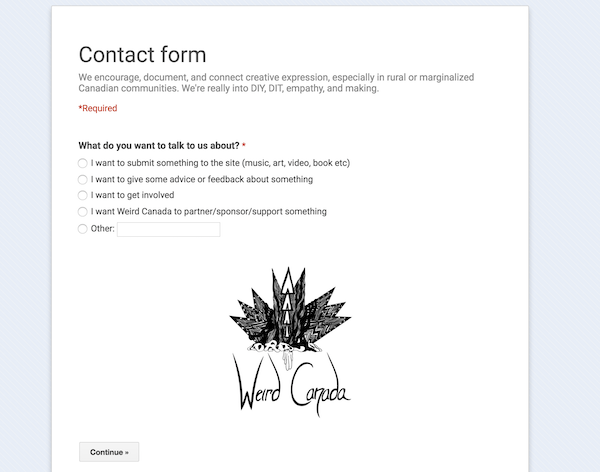Here’s our annual volunteer review form

Some other great features:
- You can embed the forms in nearly anything.
- Google forms have the capacity for multiple pages. So you can gather specific information from all the users and then separate and direct them to specialized pages.
- There are many different fields to choose from when making a form (text, paragraph text, multiple choice, checkboxes, choose from a list, scale, grid, date, time) and some of them let you create an “other” option for your favourite contrarian user.
- The forms have built in reports, and they are beautiful and useful.

You can set up notifications so that you get an email when someone fills in your forms. If you would rather receive detailed reports when someone fills in the form, you can even set up a notification script.
CHALLENGES
- The forms can occasionally get glitchy if you go into the spreadsheet and start dragging columns around. The spreadsheets don’t handle big chunks of text well. Or line breaks. Spreadsheets are not great to look at.
- It is annoying to set up a separate plugin to get a detailed email report. I don’t just want a link that says: “someone filled in your form”. I want to know what they wrote!)
- The actual aesthetic design of the form is pretty ugly. There are a bunch of flowery templates, but not a lot of simple clean looking options [update: I think you may be able to customize now?]
RECOMMENDATIONS
Tools that funnel people in one specific, pre-ordained direction have great power: they save you psychic “interpretive” energy, they save you time, they allow you to do more with less, and they even make your systems more accessible and open to people by showing them a direct path-to-action. But funnel tools save you this energy by asking for more energy from the form filler. Rather than dropping you a quick note, a potential partner or volunteer now has to fit their vision to your alien system. Forms can make systems inaccessible to people by making the process too long, too complicated, or simply nonsensical.
Each question on your form should serve a clear and important purpose, and you must fight hard to keep your forms as short as possible. You can do this by knowing the purpose of your form: and cutting out anything that doesn’t immediately serve that purpose. I also recommend always including an “other” or “notes” field for people who simply don’t fit into your boxes. There will always be some things that don’t fit into your systems, and they shouldn’t.
Your forms should work as friendly assistants, funneling and translating content into a form that you can work with, but you should never allow them to gatekeep: to suck the creativity and possibility of the unknown from your life. The more specific and detailed you are with forms, the less room you leave for growth, change, and the unknown.
GOOGLE DRAWINGS
I use drawings for organizing online files. The capacity to hyperlink makes them really useful for organizing information into clickable flowcharts or maps.
Click here to play around with the example below:
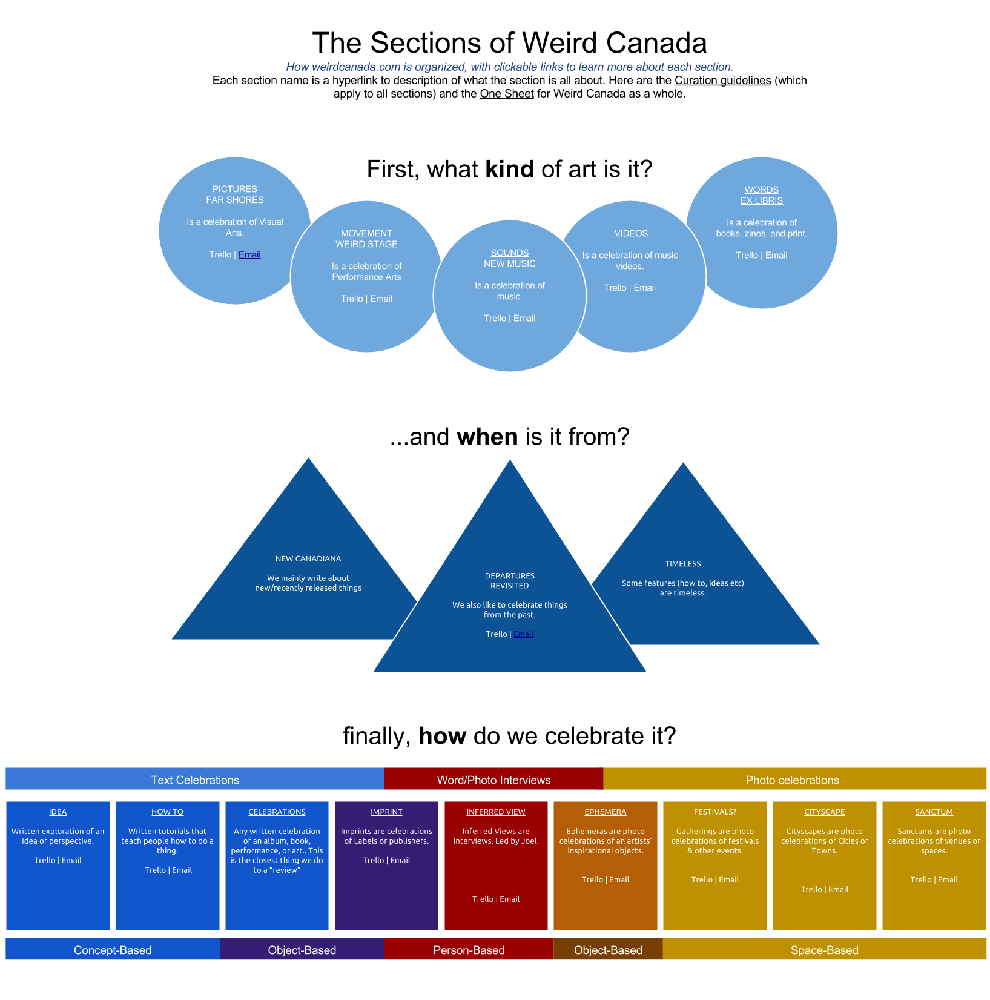Here is another example of a google drawing used to organize and share information. In this circumstance, I wanted to organize and clarify the way we interact with people who sell music through our online store.
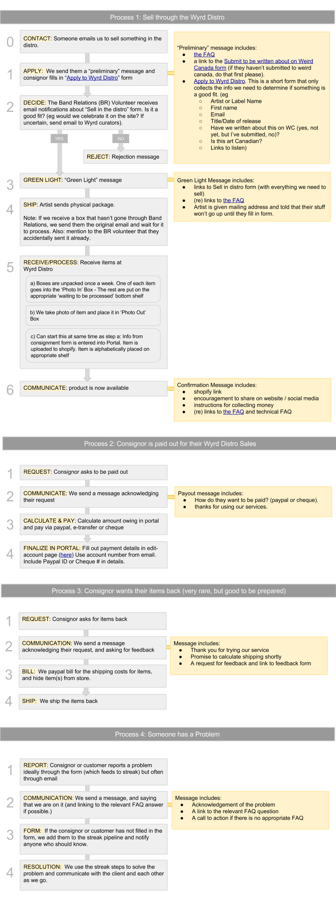CHALLENGES
It’s not easy to move things around the screen or space them out in a precise way.
If you are used to tools with more features, it can feel really limited, and you can work on formatting for hours and it will still not look great.
GOOGLE CALENDAR
Google Calendar is great, but nothing really special. I just felt obliged to list it since I use it so much. It is a free, online calendar. You can invite other people to events, so that is nice.
GOOGLE HANGOUTS
Google Hangouts are glitchy. I’ve used them hundreds of times in the past few years, and they often break. People can’t figure out where to get the plugin and it can get really frustrating for everyone. I have spent dozens of hours troubleshooting with nearly every single one of our volunteers. It’s been getting better, slowly.
But Google Hangouts allow you to screen share, dial in guests by telephone who don’t have internet, remotely control the other person’s desktop, conference video call, and even live stream to youtube.
CHROME ACCOUNTS/PEOPLE
When you sign into Chrome, the browser syncs up your bookmarks and remembers your passwords and settings into a personal account. If you click on your name in the top right corner, you can switch accounts, or add new accounts.

I use many accounts, each for a different organization that I am managing.
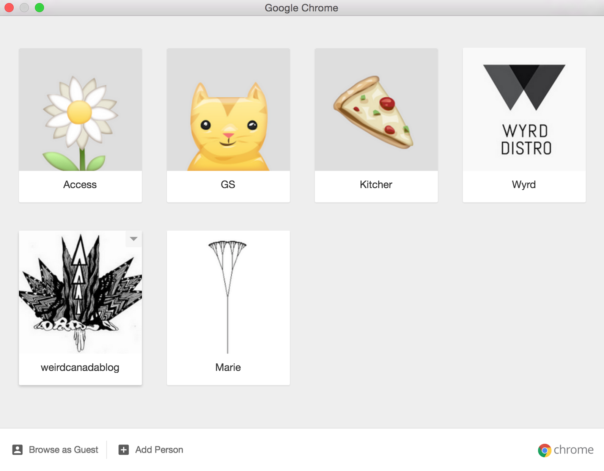Chrome accounts can be open simultaneously, which means that you can be signed into your account (personal mail, and social media accounts, bookmarks) and also, in a totally separate window be logged into a different account. You can even share access to the Chrome account with a trusted colleague or volunteer and they have instant access to everything they need: bookmarks, documents, mail, and more.
IN CLOSING
These free tools are for optimizing, scheduling, collaborating, organizing, and facilitating towards something. Without something meaningful to work on, these tools are irrelevant. In the case of Wyrd, without a strong community of people who want to work together to achieve specific goals, these free tools are meaningless. As I experiment with new tools, I always ask myself: does this serve our goals? Will it help to strengthen our community?
This is a working document, I still need to add lastpass, tictail and more. The intent is that I update it as I learn and grow. It is an open document, meaning that I intend to share -rather than hoard- my knowledge. If there is interest, I will write more about the ideas behind these tools: for example: funnelling messy information into simple systems to minimize brain work.
I will note, before closing, that free software and apps make money and sustain themselves from somewhere, and even through these don’t cost money, they are absolutely not “free.” Moving forward right now in history, we as individuals and communities will need to make decisions about how we engage with platforms as the commodity, increasingly, becomes us.